Префектура Сидзуока · город Сидзуока · искусство
Художественный музей префектуры Сидзуока: Роден под стеклянным куполом у подножия Нихондайры
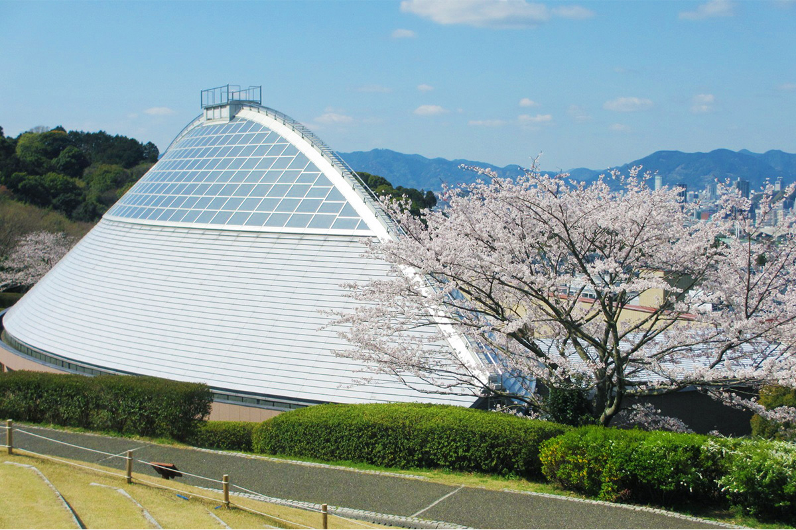
У подножия холма Нихондайра, откуда видны Фудзи и Южные Альпы, стоит художественный музей префектуры Сидзуока. Здесь собрана одна из крупнейших в мире коллекций Родена, а к входу ведёт аллея скульптур.
Место
Нихондайра: холм с видом на Фудзи
Нихондайра стоит на юге города Сидзуока, на границе районов Суруга и Симидзу. Так называют вершину горы Удояма у побережья залива Суруга и всё плато вокруг неё. Отсюда видны Фудзи, полуостров Идзу за заливом, а на севере хребет Акаиси, который в Японии зовут Южными Альпами. Внизу лежат кварталы Симидзу и порт, и вечером сюда приезжают смотреть на огни города.
Название холма связывают с легендой о Ямато-Такэру, принце-воине из древних японских хроник. Враги подожгли вокруг него траву, но принц скосил её священным мечом Амэ-но муракумо, вырвался из огня, поднялся на вершину и оглядел земли во все стороны. С тех пор, как говорят, место и называют Нихондайра.
Музей
Каменный корпус и стеклянный купол
Художественный музей префектуры Сидзуока стоит у северного подножия Нихондайры, в окружении леса и лужаек. Он состоит из двухэтажного главного корпуса, облицованного природным камнем, и зала Родена под куполом. Музей открылся в апреле 1986 года к столетию префектурального собрания, а зал Родена пристроили в марте 1994 года.
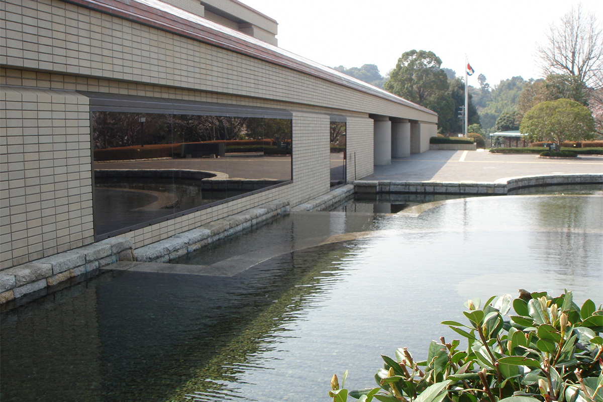
В собрании больше 2700 работ. Основа коллекции: пейзажи Востока и Запада начиная с XVII века, картины с Фудзи, Роден и скульптура нового времени, современное искусство и работы художников, связанных с Сидзуокой. Из современных зарубежных авторов здесь есть Моррис Луис, Джоан Митчелл, Ансельм Кифер, Исаму Ногути и Дональд Джадд, из японских Яёи Кусама и несколько классиков послевоенной абстракции. Кроме постоянной экспозиции музей устраивает временные выставки, лекции и мастер-классы.
Вход в главный корпус намеренно сделан узким: с яркого солнца попадаешь в помещение без окон, и тем просторнее кажется холл за ним. Этот переход задаёт ритм всему зданию.
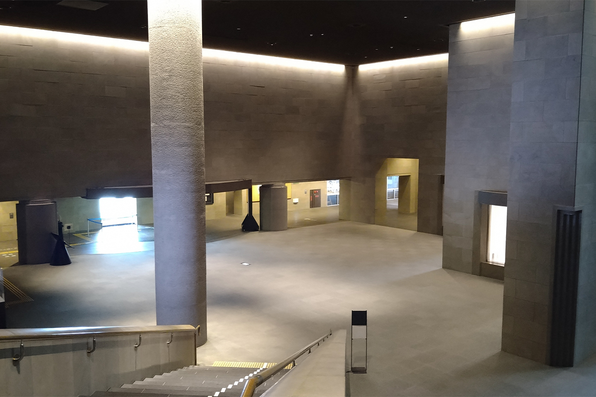
В зале Родена потолок поднимается на 9 метров, и сквозь стеклянную крышу льётся дневной свет. По залу ходят свободно, как по парку со скульптурами. Снаружи музей огибает дорожка среди сезонных растений: с неё, как со смотровой площадки, видно всё здание целиком, и его необычную архитектуру стоит рассмотреть и с этой стороны.
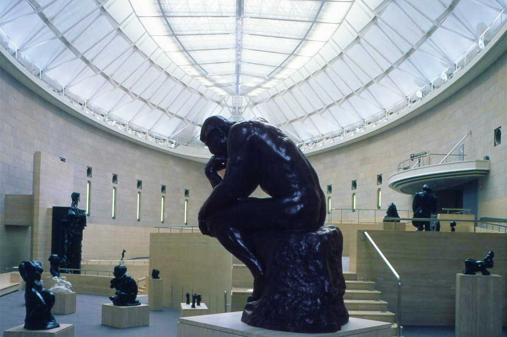
Роден
«Врата ада», «Мыслитель» и «Граждане Кале»
После открытия в 1986 году музей решил собирать и скульптуру, изображающую человеческое тело, и поставил в холле «Граждан Кале», одну из главных работ Родена. Так завязалась дружба между префектурой Сидзуока и Национальным музеем Родена во Франции, а вслед за ней началось собирание его работ. Когда открылся отдельный зал, коллекция стала одной из лучших в мире: в постоянной экспозиции 32 работы Родена, а всего 51 скульптура, и все их можно увидеть за один визит. Аудиогид с рассказом о каждой скульптуре выдают бесплатно.
«Врата ада» в Сидзуоке это шестая отливка в истории. Французское правительство заказало Родену двери для нового музея в 1880 году, и на тему «Божественной комедии» он вылепил больше 200 фигур.
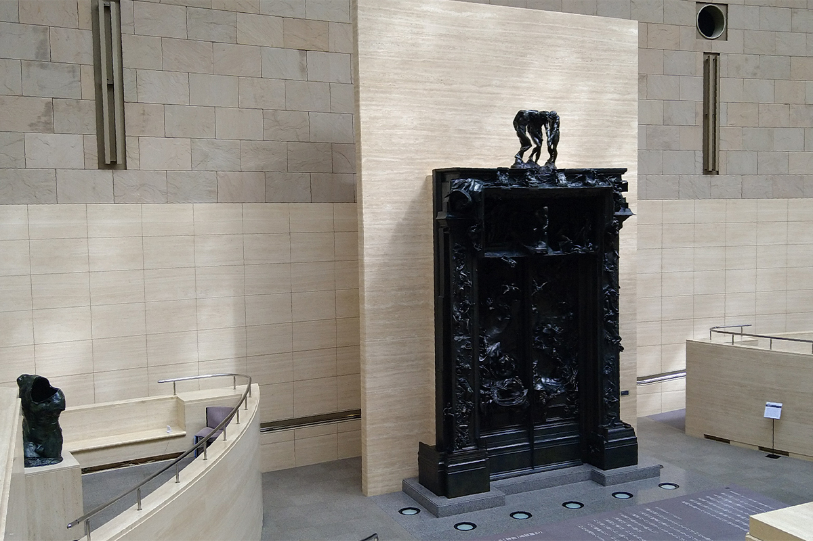
«Мыслитель» сначала был частью врат и назывался «Поэт». Перед этой фигурой люди обычно надолго замирают. Она стала так популярна, что её отделили от врат и отлили отдельно: в том же размере, что на вратах, а затем в большом и малом вариантах.
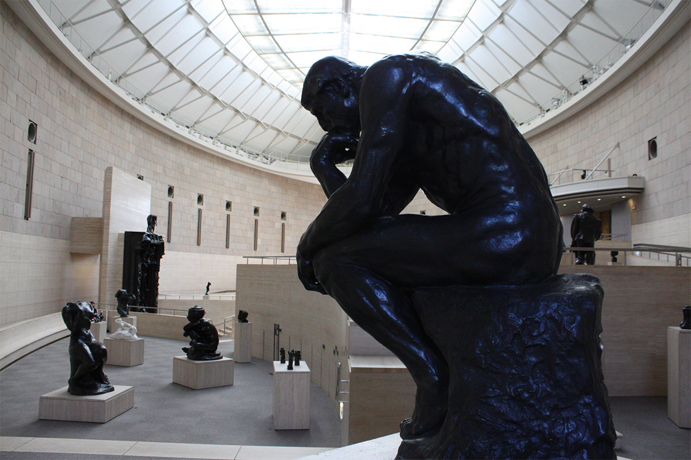
Город Кале заказал Родену памятник шести горожанам, героям Столетней войны между Англией и Францией. Но вместо героев скульптор показал людей, которые горюют и мучаются, и признание к этой работе пришло только после его смерти.
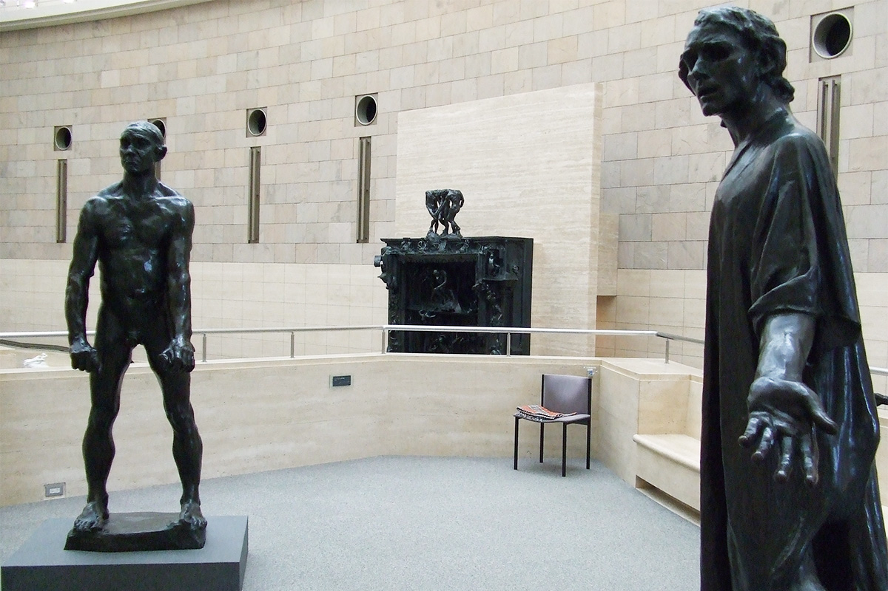
Прогулка
Аллея скульптур
От первой и второй парковок к главным воротам ведёт аллея, на которой стоят 12 работ японских и зарубежных скульпторов. Они вписаны в окружающую природу и встречают гостей ещё до входа. Аллею и главный корпус проектировало объединение архитекторов из Сидзуоки, зал Родена спроектировала отдельная проектная компания.
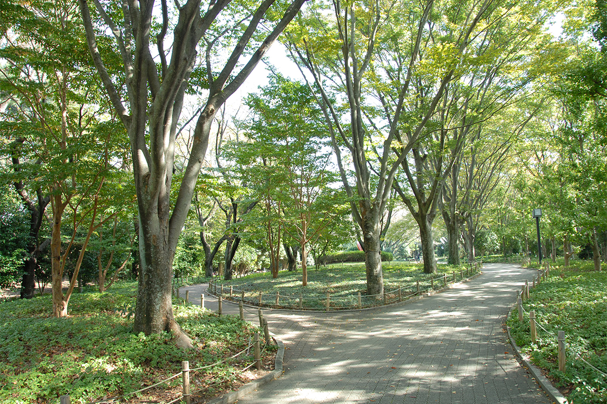
Скульптуры на аллее очень разные: от абстрактных конструкций из металла и камня до фигур людей и птиц.
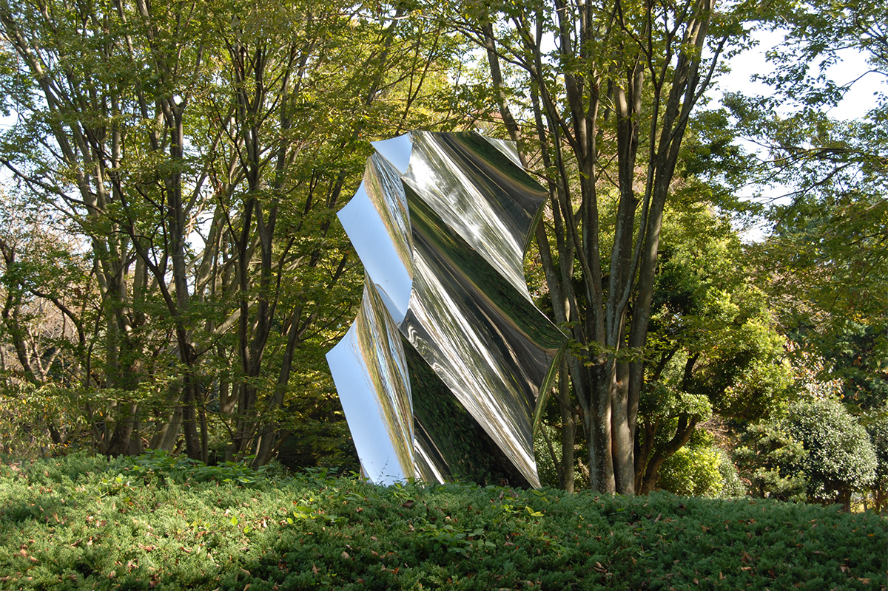
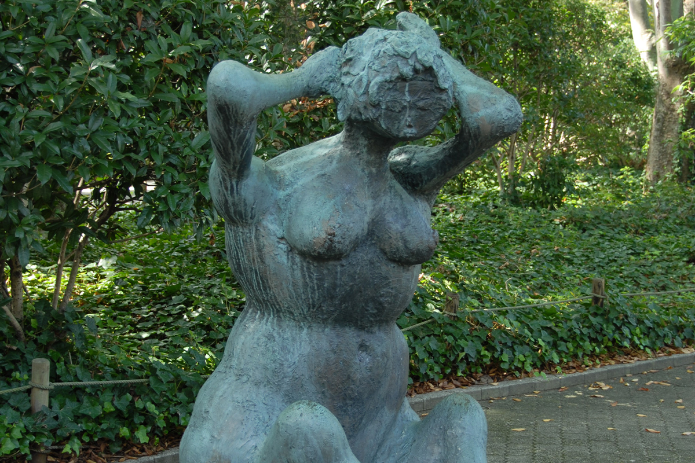
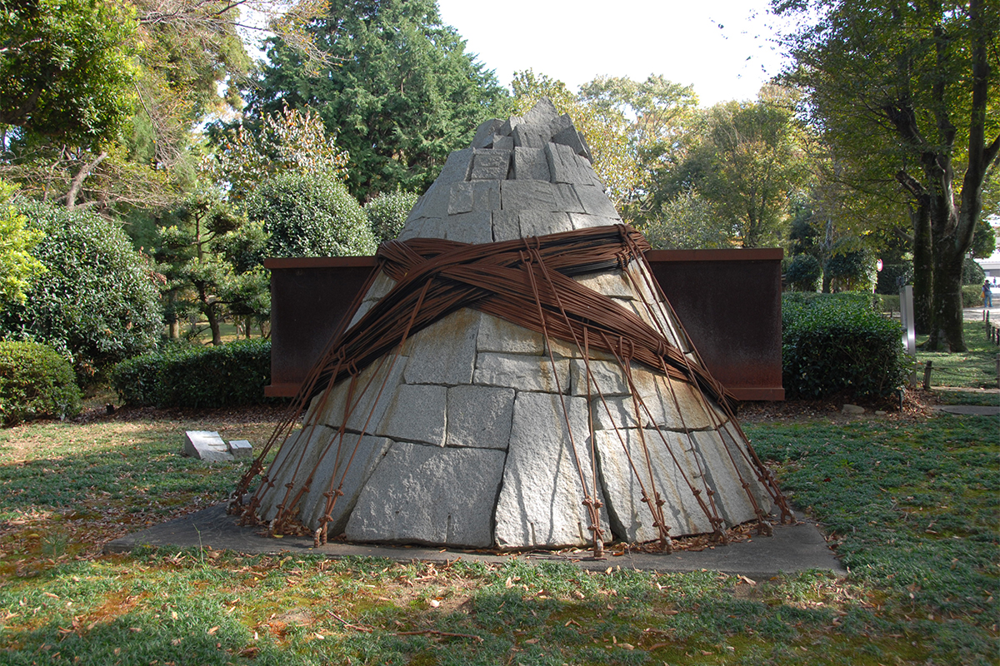
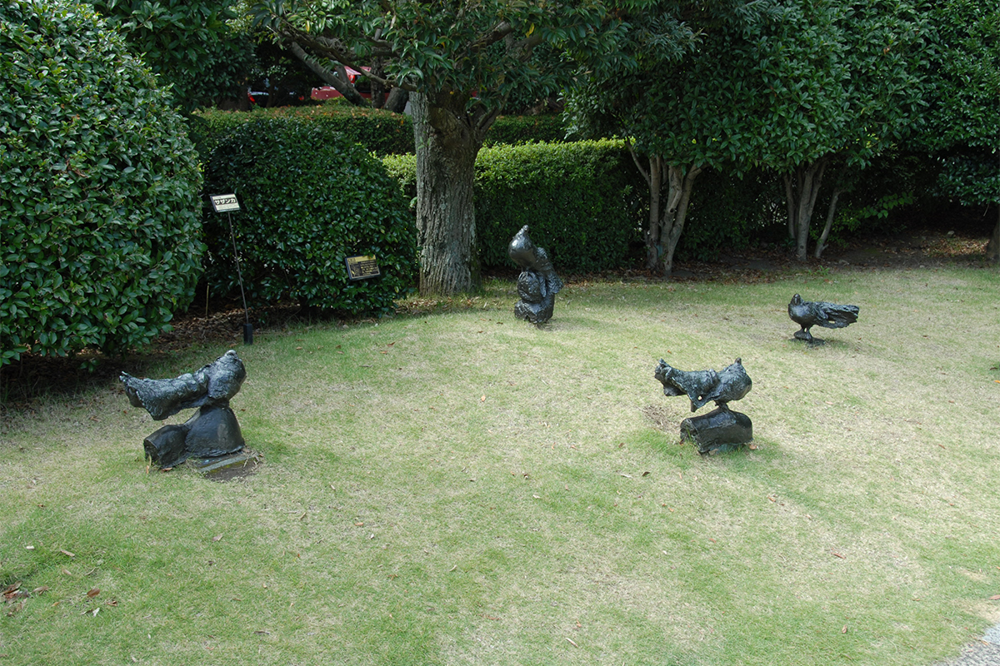
Ещё три работы с той же аллеи.
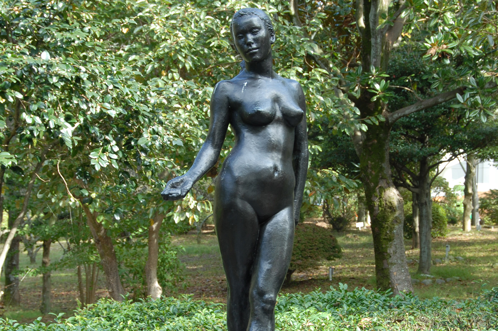
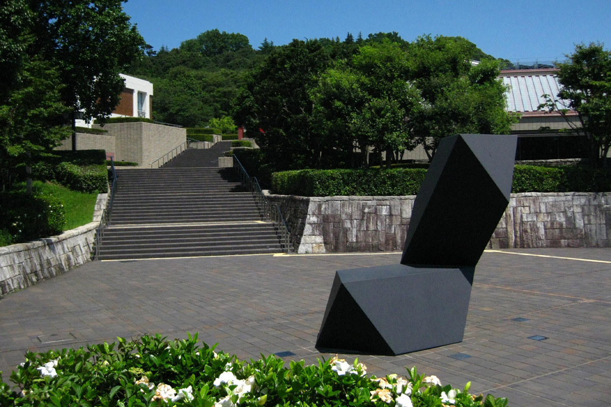
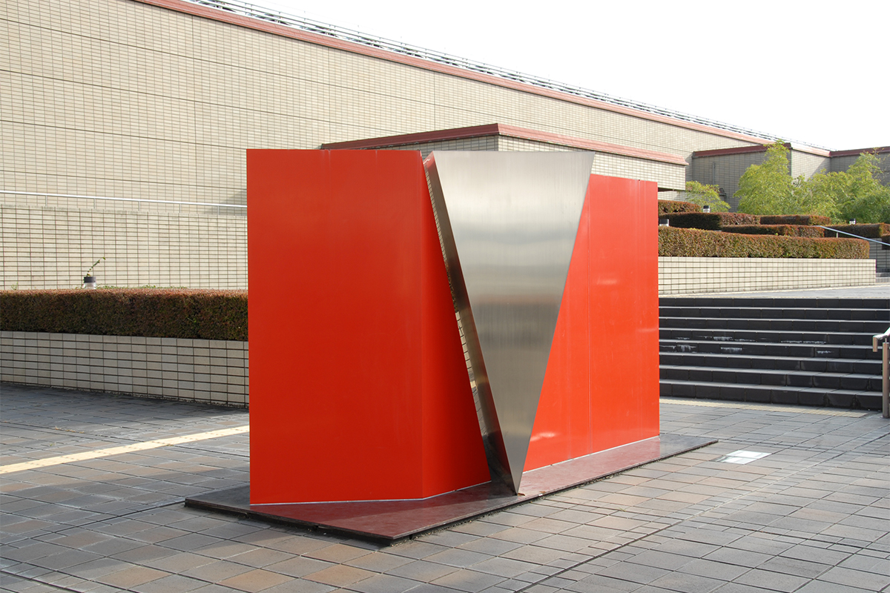
Онлайн
Коллекция в цифровом архиве
На ремонт музей закрывался почти на полгода и снова открылся в апреле 2022 года. К открытию сделали цифровой архив: работы можно смотреть на сайте из любого места и в любое время. Из примерно 2700 работ коллекции там выложено около 80 процентов, в том числе трёхмерная модель «Врат ада».
В сверхвысоком разрешении там же опубликована ширма Тайги Икэ (1723–1776), одного из главных мастеров японской живописи литераторов: на её створках изображены собрания поэтов в Ланьтине и на горе Луншань. Ширма считается важной культурной ценностью Японии. По архиву удобно искать сведения о работах, а для школьников на его основе сделаны онлайн-уроки.
Отдых
Ресторан у пруда
После выставок можно посидеть в ресторане музея. Пасту здесь готовят из свежего теста, а хлеб на выдержанной заварке привозят из пекарни-кафе.
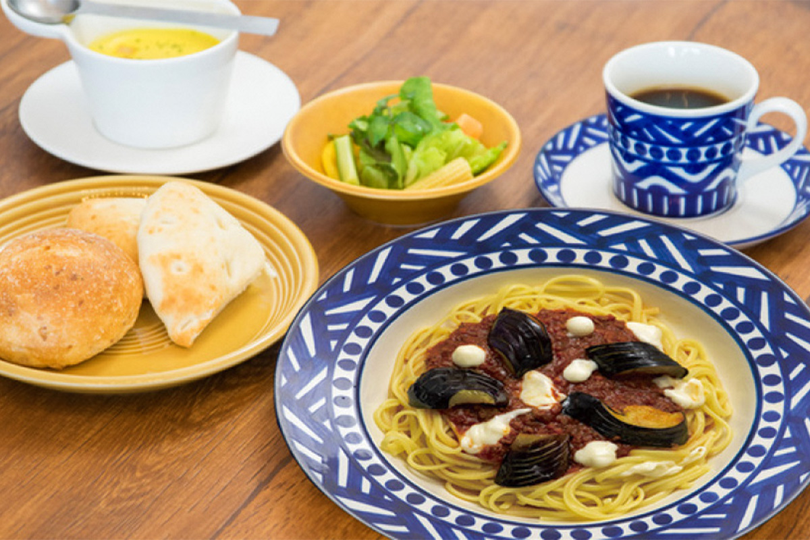
Художественный музей префектуры Сидзуока
- Адрес
- префектура Сидзуока, город Сидзуока, район Суруга, Яда, 53-2
- Телефон
- +81 54-263-5755
- Часы работы
- 10:00–17:30 (вход до 17:00)
- Выходные
- понедельник (если понедельник праздничный, то следующий день), новогодние праздники
- Цены / Вход
- 300 иен, студенты вузов и младше бесплатно
- Как добраться
- от станции JR Кусанаги автобусом Shizutetsu 5 минут до остановки «Кэнрицу бидзюцукан»; на машине около 15 минут от развязки Нихондайра-Кунодзан скоростной дороги Томэй